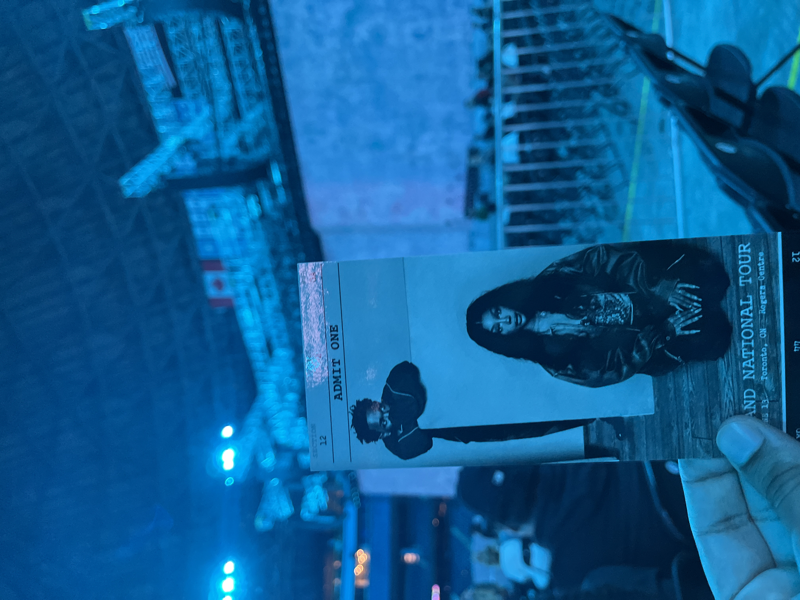

This concert felt like it was made just for me, tailored to my interests. On the night of my 20th birthday, two of my favorite artists of all time, Kendrick Lamar and SZA, shared the stage at the Rogers Centre in Toronto for The Grand National Tour. I could not have planned a better birthday gift for myself.
The evening opened with Mustard, who delivered a high-energy DJ set that got the crowd ready for what was to come. By the time the lights dimmed for the main event, the energy in the crowd was through the roof. This was both artists' first stadium tour, and the production reflected that ambition. The visuals on the massive screens were stunning, the pyrotechnics hit at all the right moments, and the diamond-shaped stage was a smart design choice, allowing both performers to engage with every section of the audience, especially for moments where they both shared the stage.
There was also an undeniable air of tension in the room. This concert marked Kendrick's first time back in Toronto following a very public feud with beloved Toronto artist Drake and there were concerns about his reception in the city. The fact that Kendrick and SZA had also just performed together at the Super Bowl halftime show added to the sense that this tour was something historic. They alternated sets throughout the night, each performing four or five songs before switching off, weaving their collaborations in between. The energy never dipped, and Kendrick, feeding off the moment, rose to meet it. He rapped through his impressive discography without missing a single beat. Whatever anxiety had existed at the start of the night had been replaced by something else, the recognition that we were watching an artist at his most focused, performing in the heart of his rival's city, and in his prime.

SZA, fresh off the release of Lana, the deluxe edition of her award winning album SOS, also delivered a captivating performance. The highlight of her set was her performance of the song "Nobody Gets Me", where she flew through the air, suspended above the stage without her vocal performance wavering. It was a breathtaking display of control and artistry, proving that she belongs on stadium stages just as much as her co-headliner.

My favorite moment of the night was hearing the song "All the Stars" live for the first time. That song has been one of my favorites since its release in 2018. As the final chorus rang out and the pyrotechnics lit up the night sky, I realized that this was more than just a great show. It reminded me why I love music, not just for the songs, but for the moments they anchor in your life. The Grand National Tour was historic, high-energy, and deeply personal — a birthday gift I will never forget.